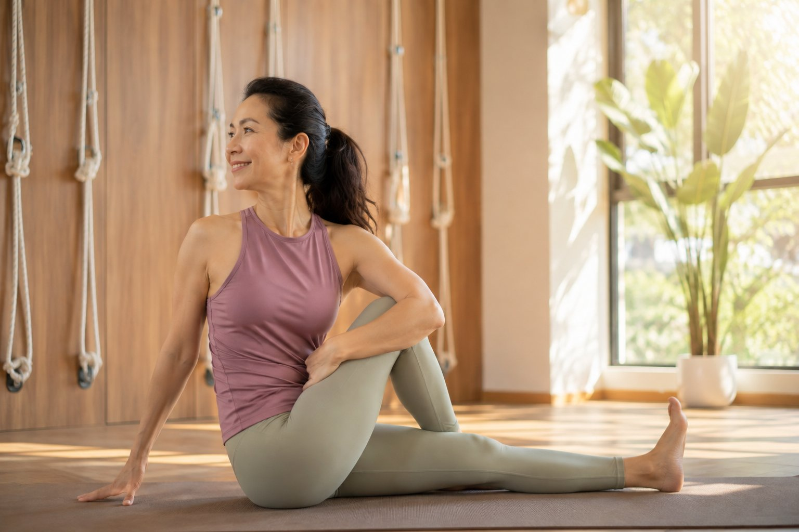

40 歲、50 歲才想調整體態,會不會太晚了?

- 調整體態幾乎沒有「太晚」，因為圓肩駝背來自長年用力習慣，習慣無論幾歲都能重新學習。
- 中年開始反而有三個優勢：動機更清楚、更懂得聽身體的話、改變帶來的回饋更有感。
- 真正該擔心的不是年紀，而是用錯方法、一開始就做太激烈的動作反而受傷退縮。
- 壁繩瑜伽用繩帶分擔重量、提供支撐，讓沒基礎或不敢太激烈的人也能安全循序開始。
「駝背這麼多年了,現在才想改,還有救嗎?」「這個年紀才開始運動,會不會太晚?」——這是很多人在踏出第一步前,心裡最大的一道坎。因為覺得「大概沒用了」,於是一年拖過一年。這篇想很誠實地回答你這個問題,順便說一件你可能沒想到的事:中年開始,其實有它的優勢。
先講結論:調整體態,幾乎沒有「太晚」
為什麼?因為造成圓肩、駝背的,是長年累積的用力習慣,不是「年紀」本身。而習慣——無論你幾歲——都是可以重新學習的。身體有很強的適應能力,你給它新的刺激、新的練習,它就會慢慢改變分工方式。差別只在於:習慣越久,需要的時間耐心多一點;但「會不會改變」的答案,始終是「會」。
你不會因為「牙齒已經刷了幾十年」就覺得今天刷牙沒意義。體態也一樣——重點從來不是「彌補過去」,而是「從今天起,讓身體往好的方向走」。今天開始,永遠比明年開始早。
中年開始,其實有三個優勢
- 動機更清楚：年輕時身體怎麼操都沒感覺,到了這個年紀,你「有感覺」了——知道哪裡緊、知道為什麼想改。這種清楚的動機,反而讓人練得更專注、更持久。
- 更懂得聽身體的話：不再逞強、不再追求高難度,願意用溫和、安全的方式好好練——這其實是更聰明的練法,受傷風險也更低。
- 回饋很有感：正因為身體已經有些狀況,一旦開始調整,那個「鬆了、輕了、挺了」的對比會特別明顯,成就感來得快,也更容易堅持。
重點不是「幾歲」,而是「用對方法」
真正該擔心的,從來不是年紀,而是「用錯方法」——例如一開始就做太激烈、太難的動作,反而受傷退縮。這也是壁繩瑜伽適合熟齡族群的原因:牆上的繩帶會分擔重量、提供支撐,讓身體很硬、沒有基礎、不敢太激烈的人,也能在安全的狀態下循序開始。年紀不是門檻,方法對了,身體就會回應你。
不確定自己的狀況適不適合開始?
那就先做一次檢測看看。AI 體態檢測會把你現在的體態量化出來,由老師當面解讀,誠實告訴你適合怎麼開始、有沒有需要先注意的地方——不急著決定,先看清楚。
預約首次 NT$199 AI 體態檢測如果你擔心「身體很硬、沒基礎」,可以看：身體很硬、沒基礎,為什麼反而更適合壁繩;想知道要練多久有感,看：壁繩瑜伽練多久,體態會有感?
本文為體態與姿勢的一般衛教分享,非醫療診斷或治療。開始任何運動前,若有慢性疾病、骨質疏鬆或其他健康狀況,請先諮詢合格醫療專業人員。
常見問題
40歲、50歲才開始調整體態，會不會太晚？
幾乎沒有太晚。造成圓肩、駝背的是長年累積的用力習慣，不是年紀本身，而習慣無論幾歲都可以重新學習，身體有很強的適應能力，差別只在於習慣越久需要的時間耐心多一點。
中年才開始練習，真的有優勢嗎？
有三個優勢：動機更清楚，因為已經有感覺、知道為什麼想改；更懂得聽身體的話，不逞強、用溫和安全的方式練，受傷風險更低；回饋很有感，鬆了輕了挺了的對比特別明顯，成就感來得快也更容易堅持。
開始調整體態真正該擔心的是什麼？
真正該擔心的不是年紀，而是用錯方法，例如一開始就做太激烈、太難的動作反而受傷退縮。年紀不是門檻，方法對了身體就會回應你。
為什麼壁繩瑜伽適合熟齡族群？
牆上的繩帶會分擔重量、提供支撐，讓身體很硬、沒有基礎、不敢太激烈的人，也能在安全的狀態下循序開始，不需要一開始就做太難的動作。
不確定自己現在的狀況適不適合開始，該怎麼辦？
可以先做一次AI體態檢測，把現在的體態量化出來，由老師當面解讀，誠實告訴你適合怎麼開始、有沒有需要先注意的地方，不急著決定，先看清楚。